CS184/284A Spring 2025 Homework 4 Write-Up
Link to webpage: https://cal-cs184-student.github.io/hw-webpages-webpage/
Link to GitHub repository: https://github.com/cal-cs184-student/sp25-hw4-yay.git
Overview
In this homework, I built a grid of point masses and springs, integrated physical equations of motion to create a simulation, implemented handling for collision with objects (sphere and plane) and handling self-collisions, and created shaders (diffuse shading, Blinn-Phong shading, texture mapping, bump mapping, displacement mapping, mirror shading). I found task 2 really interesting and challenging, as playing with the motion equations could impact the simulation in really cool ways. I also thought the shaders were really cool, especially considering how challenging homework 3 was for me.
Part 1: Masses and springs
scene/pinned2.json Wireframe
|
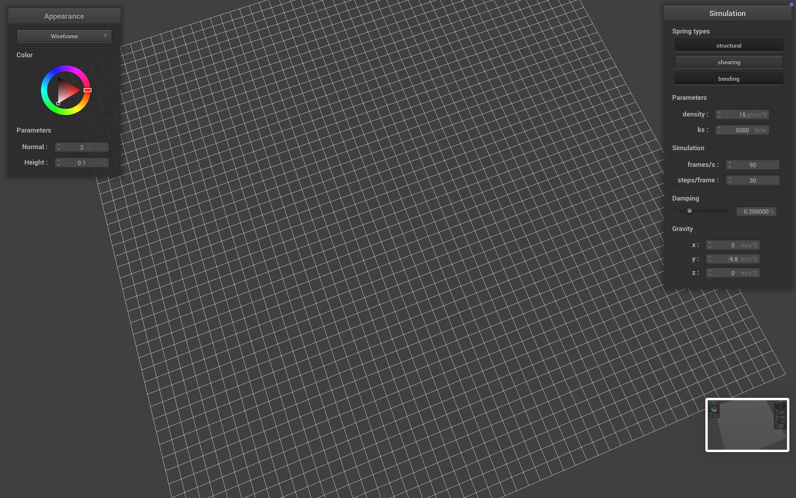
|
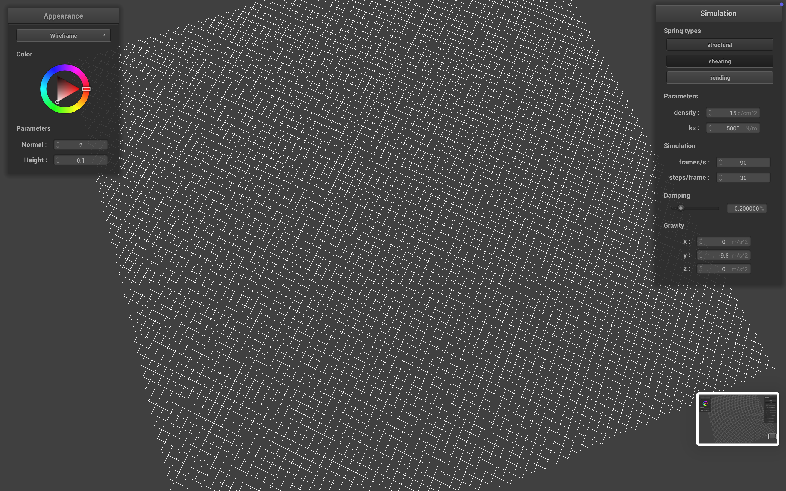
|
|
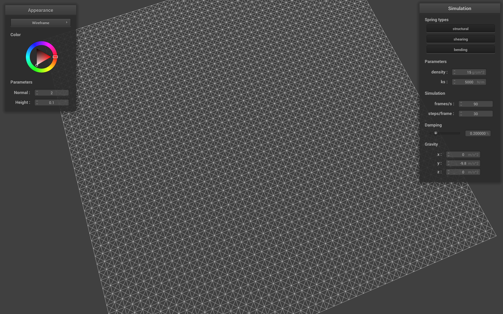
|
Part 2: Simulation via numerical integration
scene/pinned4.json Final Resting State (Default Parameters)

|
Effects of Changing the Spring Constant ks
.png)
|
.png)
|
The default value for the spring constant (ks) is 5,000 N/m. Pictured above is the final resting state of the cloth with 100 N/m and 10,000 N/m. During the simulation, a low ks resulted in the cloth having more ripples, jiggling, and stretching more freely. Alternatively, a high ks resulted in a stiffer, more rigid cloth.
Effects of Changing Density
.png)
|
.png)
|
The default value for density is 15 g/cm2. Pictured above is the final resting state of the cloth with 5 g/cm2 and 60 g/cm2. During the simulation, a low density resulted in the cloth appearing lighter, and slightly fluttering. A high density resulted in more pronounced waves, with the cloth being pulled down more intensely.
Effects of Changing Damping
.png)
|
.png)
|
The default value for damping is 0.2%. Pictured above is the final resting state of the cloth with 0% and ~0.5%. During the simulation, a low damping resulted in the cloth oscillating for far, far longer, whereas a high damping caused the oscillations to finish abruptly.
Part 3: Handling collisions with other objects
In Sphere::collide(), I first determine the distance from the point
mass’ position to the sphere’s origin. If this distance is less than or equal to the
radius, the point mass is at or inside the sphere and needs to be bumped to the
surface of the sphere. To do this, I find the tangent point: an intersection point
on the sphere’s surface along the path between the point mass' position and the origin.
A correction vector is then calculated such that, when added to the point
mass’s last_position, it moves the point mass to the tangent point:
correction = tangent_point − last_position.
Finally, this correction vector is scaled by (1-friction)
to account for friction, and the point mass’s position is updated accordingly:
pm.position = pm.last_position + correction * (1.0 - friction)
In Plane::collide(), I first determine if the point mass is inside the plane.
To do this, I create two vectors from the point mass’ position to the plane
and from the point mass’ last_position to the plane. Taking the dot product
of these vectors with the plane’s normal function will indicate which side of the plane
position and last_position fall on. If position
and last_position fall on opposite sides, the point mass has crossed over
the plane and needs to be bumped to the surface. Next, I determine the tangent point:
the point along the path from last_position to position
where the point mass would have intersected the plane. I create a correction vector such
that, when added to the point mass’s last_position, it moves the point mass
to be slightly above the tangent point, using a SURFACE_OFFSET:
correction = tangent_point − last_position + (normal × SURFACE_OFFSET)
Finally, this correction vector is scaled by (1-friction) to account
for friction, and the point mass’s position is updated accordingly:
pm.position = pm.last_position + correction * (1.0 - friction)
In Cloth::simulate(), for each point mass in point_masses
and each collision in collision_objects, the respective collide
function is called.
scene/sphere.json Final Resting State
|
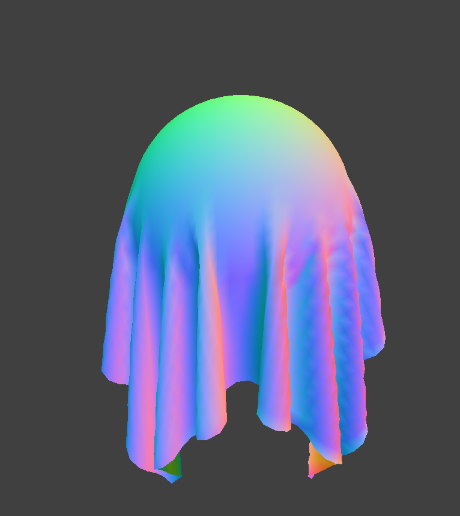
|
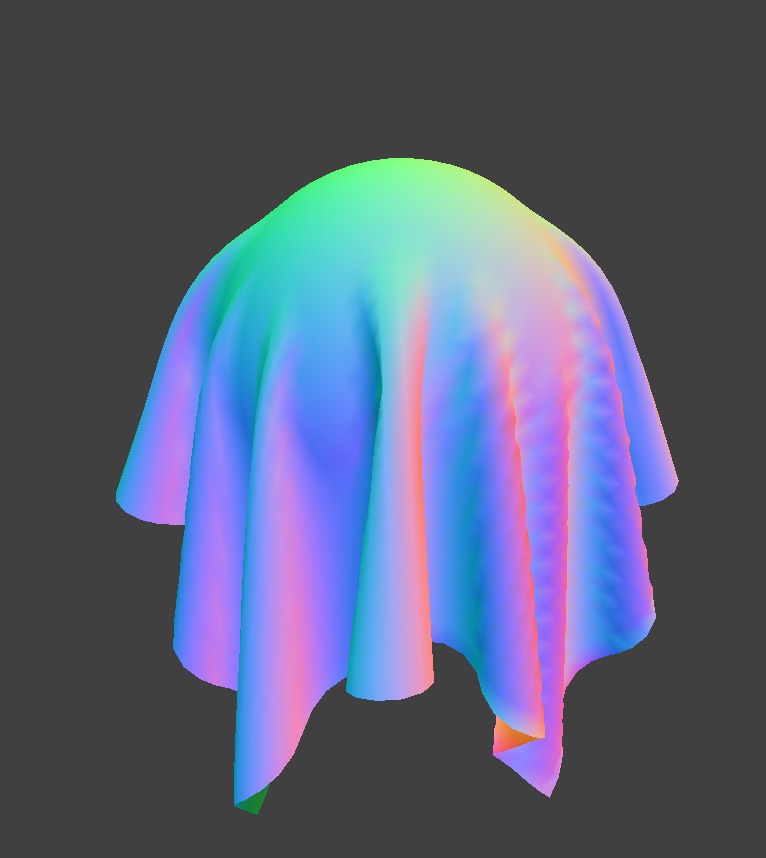
|
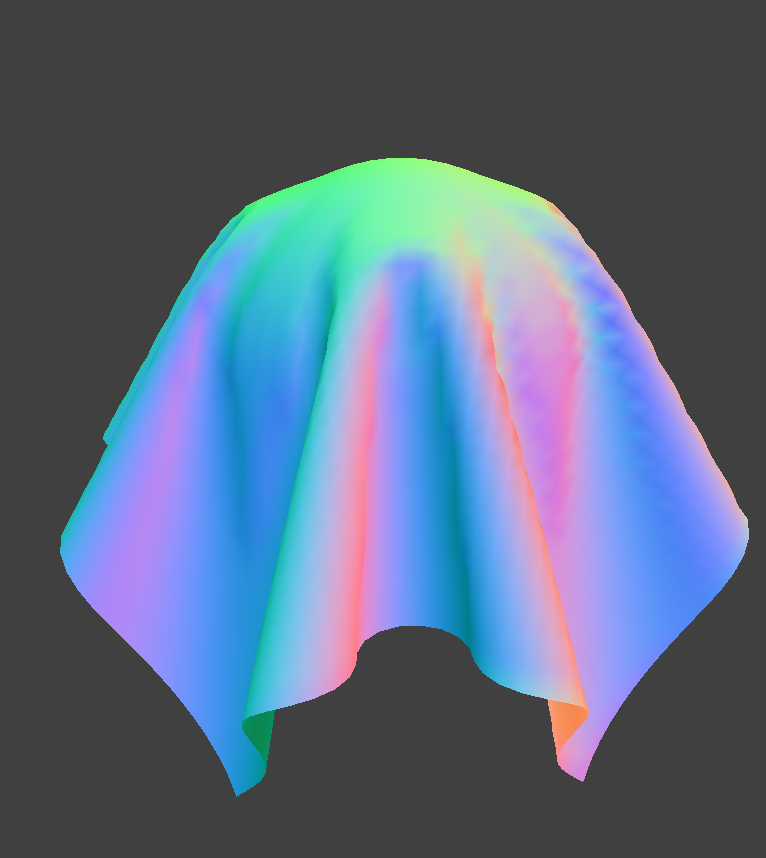
|
At ks = 500 N/m, the cloth is very saggy and droopy, showing many pleats and hugging the sphere closely. At ks = 5,000 N/m, the cloth is less saggy, maintaining a bit more structure while still hugging the sphere. At ks = 50,000 N/m, the cloth is very stiff, with sharp creases and few pleats. Ultimately, as the spring constant increases, the cloth becomes stiffer and less flowy.
scene/plane.json Final Resting State
|
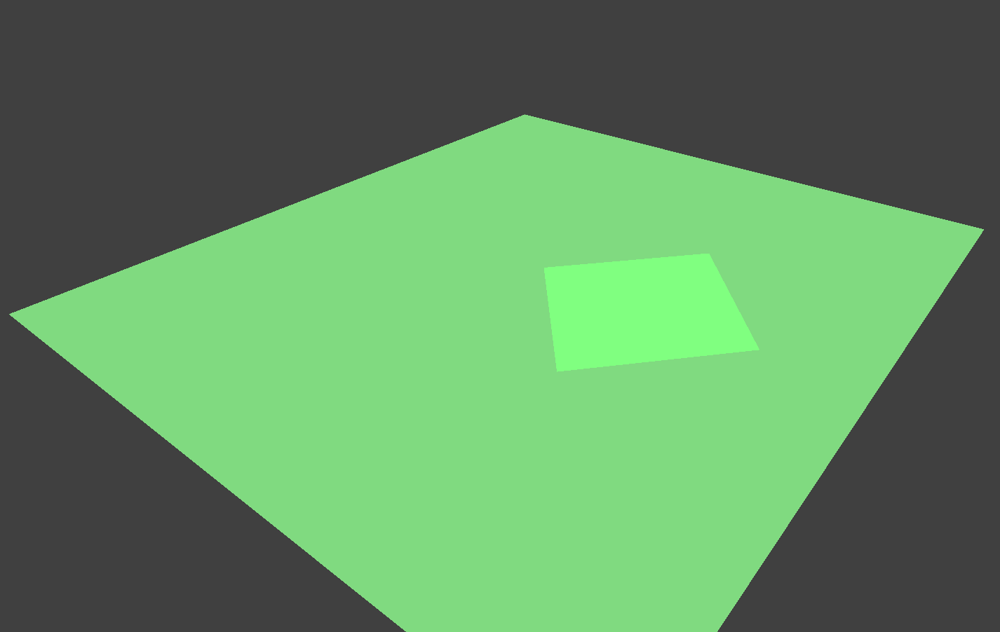
|
Part 4: Handling self-collisions
In Cloth::simulate(), I handle self-collisions by calling
build_spatial_map() and then calling self_collide()
for every point mass.
build_spatial_map() uses hash_position() to
populate a map with all point masses. hash_position() takes the
point mass’ position and maps it to a float that represents a specific 3D box
volume. The grid cell dimensions are defined by
\( w = \frac{3 \cdot \text{width}}{\text{num_width_points}} \),
\( h = \frac{3 \cdot \text{height}}{\text{num_height_points}} \),
and \( t = \max(w, h) \). The point mass’ position is converted to cell indices using
\( \lfloor \frac{\text{position.x}}{w} \rfloor \),
\( \lfloor \frac{\text{position.y}}{h} \rfloor \), and \( \lfloor \frac{\text{position.z}}{t} \rfloor \).
The cell indices are then used to create a unique hash through prime multipliers and XORs.
self_collide() looks for potential collisions between point masses.
As the hash code from hash_position() corresponds to specific 3D box volumes, I
check for collisions of point masses within the corresponding bin. For each of the collision
candidates, if the point mass and the candidate are less than 2 * thickness
distance apart, a correction vector is calculated to move the point mass to be 2 * thickness
distance away from the collision. As such, the final correction vector added to the point
mass’ position is the average of all pairwise correction vectors, scaled down by simulation_steps.
scene/selfCollision.json at Various States (Default Parameters)

|

|

|

|

|

|
scene/selfCollision.json at Various States and Densities
| density = 5 g/cm2 | density = 15 g/cm2 [default] | density = 60 g/cm2 | |
|---|---|---|---|

|
|

|
|

|
|

|
|

|
|

|
|

|
|

|
At lower densities, the cloth seems to float and flutter down, rippling less in the air and at its final resting state. Alternatively, at a higher density, the cloth appears to fall with more weight, compressing and bunching greatly upon initially hitting the plane.
scene/selfCollision.json at Various States and Spring Constant Values
| ks = 500 N/m | ks = 5,000 N/m [default] | ks = 50,000 N/m | |
|---|---|---|---|

|
|

|
|

|
|

|
|

|
|

|
|

|
|

|
When the spring constant is small, the cloth appears looser, with many bunches and ripples as it falls. In its final resting state, the cloth is folded onto itself many times. Alternatively, when the spring constant is large, the cloth appears really stiff, forming large waves as opposed to smaller ripples, and has minimal folds at the final resting state.
Part 5: Shaders
Shader programs control how graphics are rendered. Vertex shaders
(e.g., Displacement.vert) change geometric properties,
transforming per-vertex values, whereas fragment shaders (e.g., Diffuse.frag,
Phong.frag, Texture.frag, Bump.frag,
Mirror.frag) handle fragments, determining the final color for all
per-pixel values based on the per-vertex values from the vertex shader.
The Blinn-Phong Reflection Model is a shading model based on perceptual observations.
The model is composed of ambient lighting, diffuse reflection, and specular highlights.
The ambient component represents light scattered from the environment:
$$
\text{Ambient} = k_a \cdot I
$$
where \( k_a \) is the ambient coefficient and \( I \) is the light intensity.
The diffuse reflection simulates light that hits the surface directly:
$$
\text{Diffuse} = k_d \cdot \left(\frac{I}{r^2}\right) \cdot \max(0, n \cdot l)
$$
where \( k_d \) is the diffuse coefficient, \( r \) is
the distance to the light, \( n \) is the surface normal, and \( l \)
is the light direction vector.
The specular highlight is the shine from light reflecting off a surface:
$$
\text{Specular} = k_s \cdot \left(\frac{I}{r^2}\right) \cdot \max(0, n \cdot h)
$$
where \( k_s \) is the specular coefficient and \( h \) is the
half-vector bisecting the viewer and light directions.
Finally, the total reflected light is:
$$
\text{L} = \text{Ambient} + \text{Diffuse} + \text{Specular}
$$
scene/sphere.json with Blinn-Phong Shading
|
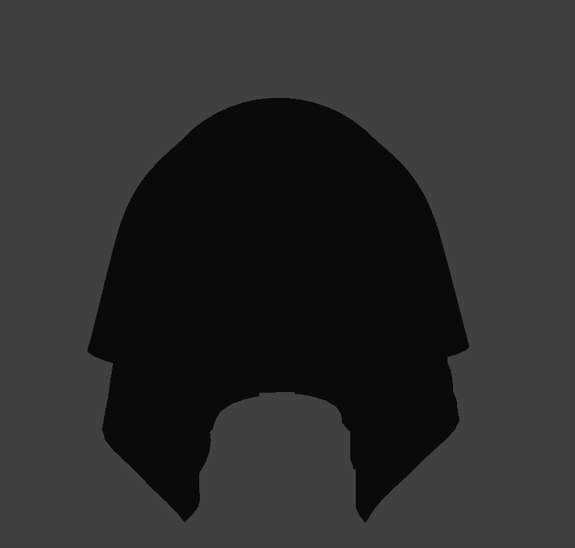
|
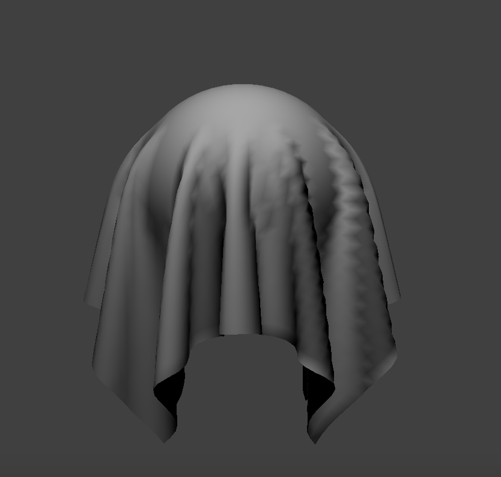
|
|
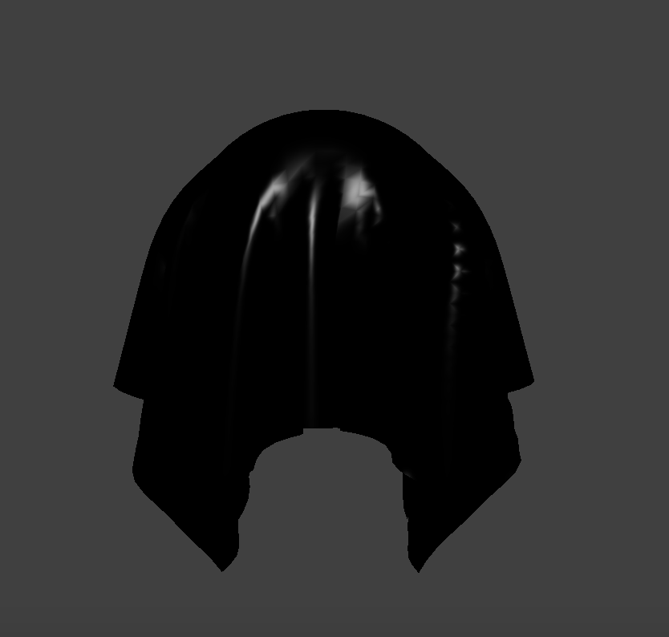
|
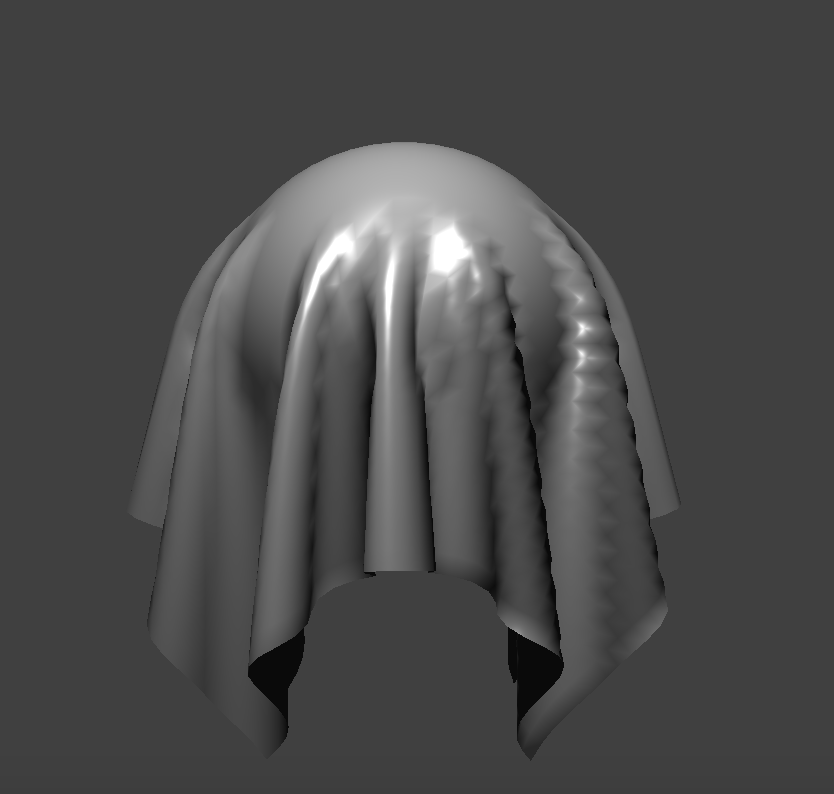
|
scene/sphere.json with Texture Mapping
| 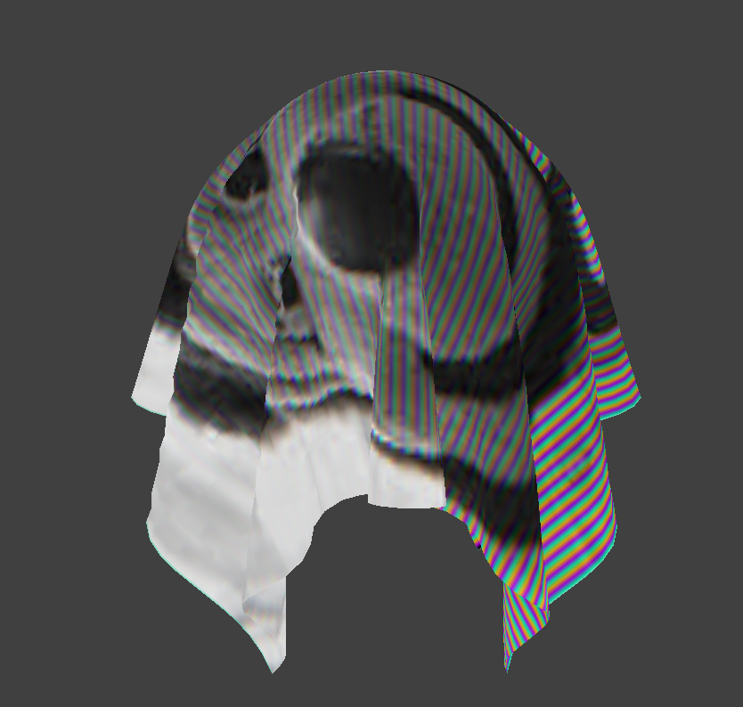 | 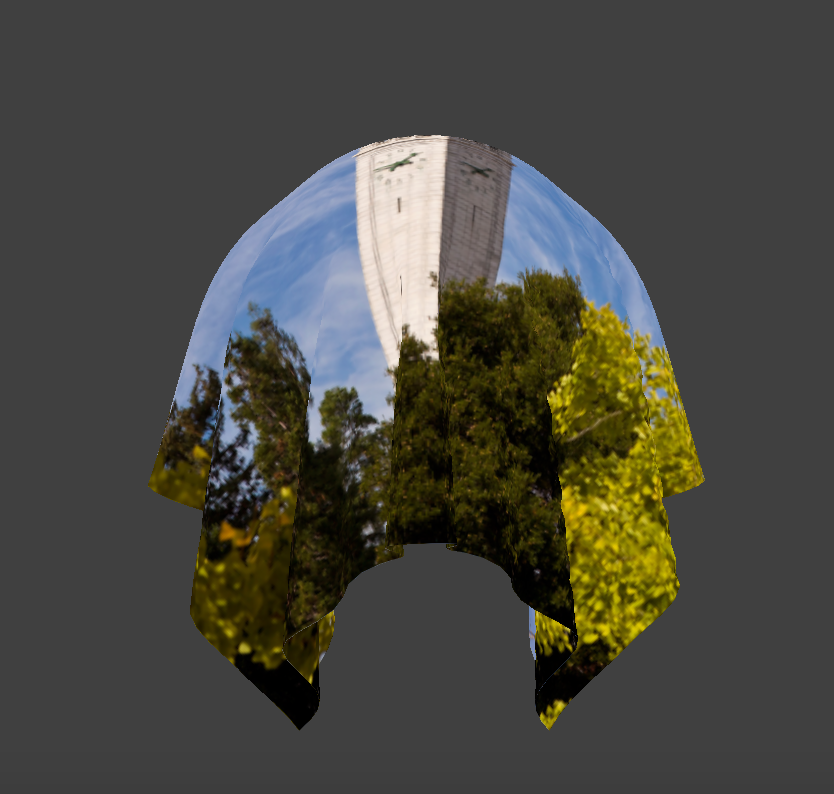 |
scene/sphere.json with Bump and Displacement Mapping

|

|

|

|
Both bump mapping and displacement mapping have the same surface detailing. However, bump mapping maintains the same seamless cloth silhouette, whereas displacement mapping alters the geometry, creating ridges in the cloth. This is because displacement mapping uses a vertex shader, and bump mapping does not.
Changing mesh coarseness across Bump and Displacement Mapping
-o 16 -a 16 |
-o 128 -a 128 |
|
|---|---|---|
| Bump Mapping |
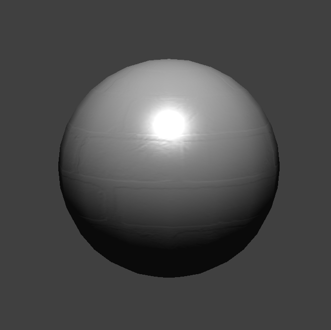
|
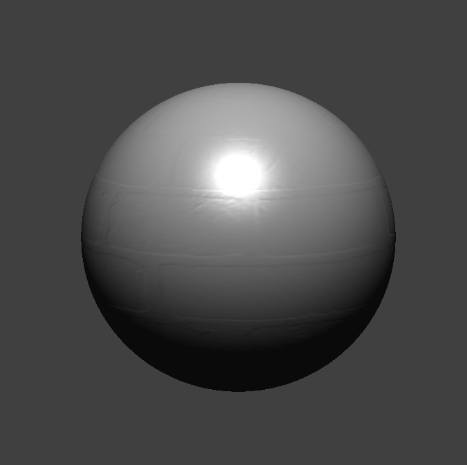
|
| Displacement Mapping |
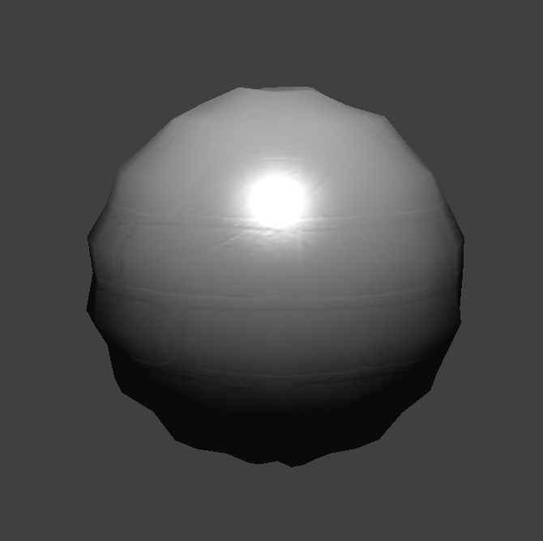
|
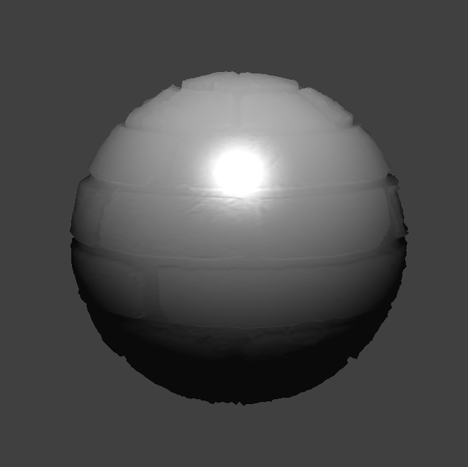
|
With bump mapping, the change in mesh coarseness does not have a very visible impact. The higher resolution mesh is slightly rounder, but for the most part the results are compraable. Alternatively, with displacement mapping, the change in mesh coarseness impacts the overall shape and accuracy of the image. At the lower resolution mesh, the ridges do not accurately reflect the indents in the texture. However, at the higher resolution mesh, the displacement mapping creates accurate bumps and indents.
scene/sphere.json with Mirror Shading
| 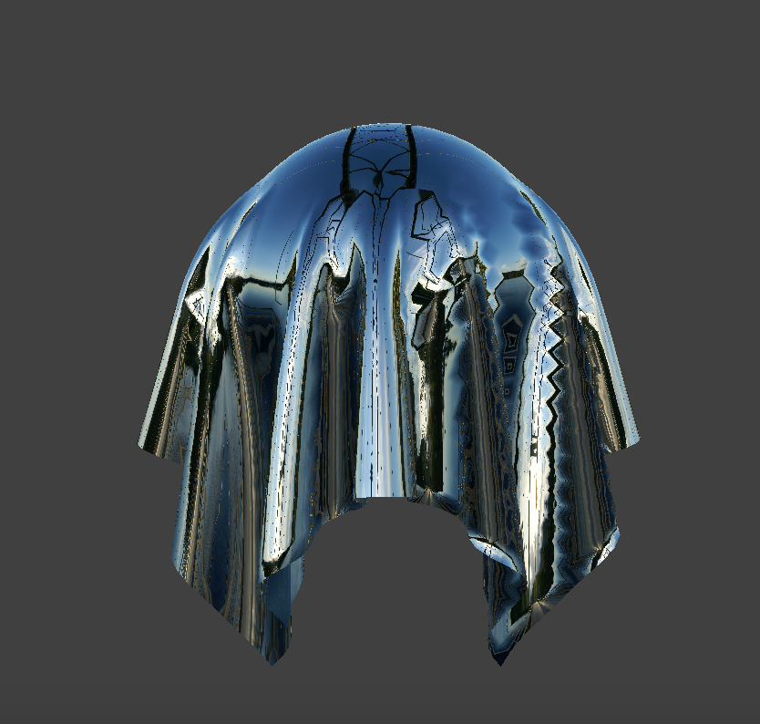 |